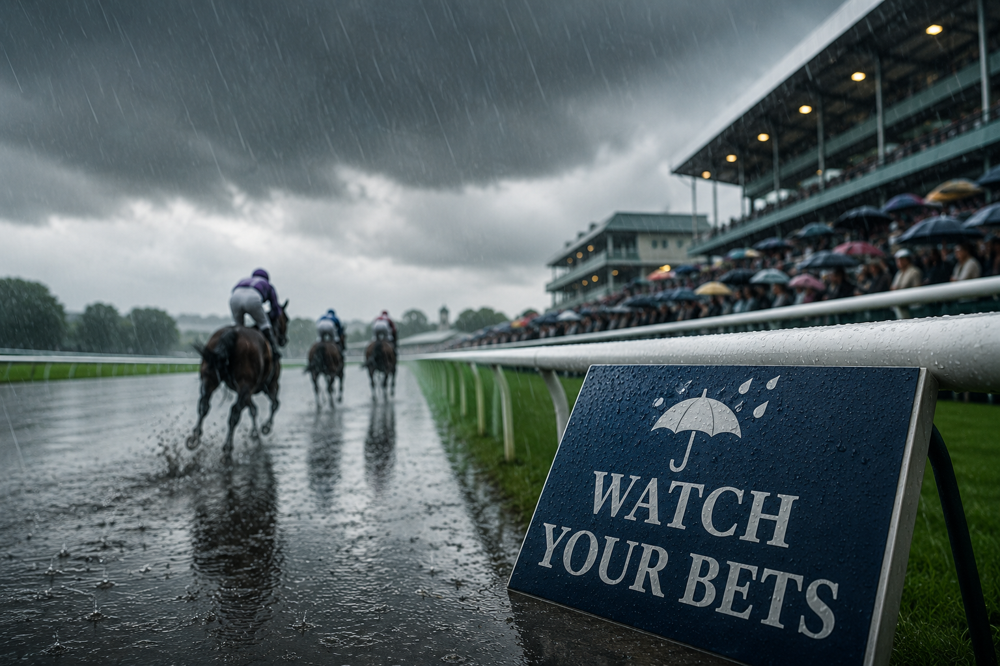

Main Edition · Saturday 29 August 2026 · Beverley · Chepstow · Curragh · Goodwood · Sandown · Windsor
SATURDAY MAIN EDITION · BET365 PRICES · WEATHER WATCH ACTIVE
SATURDAY. SIX MEETINGS. SIX SHOTS.
Big prices at the top of the page — but keep one eye firmly on the sky
We've worked through a huge Saturday card, the changing ground and the morning markets. Six headline selections have made the cut — one from each race, all sitting inside today's published Top 3.
BET365 PRICES · visually checked this morning · prices can change
Top Tip
Pivotal Attack
3.40 Curragh 17/2
Our clear pick in a competitive Curragh contest and, crucially, one whose chance does not depend on the forecast rain arriving. At 17/2 the price gives us plenty to work with.
Strong current case · price appeals
No. 2
Pierre Royal
4.15 Curragh 9/2
A particularly robust contender: he heads our view on the ground as it stands and remains a major player if conditions deteriorate. That's exactly the sort of resilience we want today.
Robust profile · weather resilient
No. 3
Amazonian Dream
5.00 Windsor 9/1
Windsor is very much his patch. Four course-and-distance wins and a string of solid recent efforts here make 9/1 too interesting to leave alone.
Course specialist · 4 C&D wins
THREE PRICES THAT CAUGHT OUR EYE · one headline selection per race
Headline Value
Addison Grey
2.00 Goodwood 11/1
Heads our race view and brings the sort of recent profile we want at a double-figure price. The market is competitive, but 11/1 still looks generous enough to get involved.
Race No. 1 · double-figure value
Value No. 2
Ziata
2.55 Beverley 8/1
The testing Beverley ground changes the complexion of this race and plays strongly to Ziata's proven softer-ground profile. She heads our revised view of the contest.
Testing-ground case · revised No. 1
Value No. 3
Alfred Wallace
3.30 Sandown 7/1
Our first choice in the race and backed up by a strong wider ratings case. Seven to one is enough to earn the final public Value slot on a very competitive Saturday.
Race No. 1 · ratings support
THE WEATHER HAS A VOTE
Saturday comes with a health warning: check the going before you bet.

Beverley is already testing, officially Soft with heavy places this morning. We've taken that seriously and adjusted today's race-by-race picks accordingly rather than pretending yesterday's ground still exists.
The Curragh is the big one to watch. The morning intelligence highlighted the possibility of significant rain, with as much as 30mm in the wider forecast. At publication time the ground remains Good, with Good to Firm places on the straight course, so our selections reflect the ground we've actually got — not the ground somebody thinks might arrive. If the rain comes in force, the complexion of the card could change dramatically.
Goodwood also has rain lurking in the forecast, while Chepstow could ease from its current Good, Good to Soft in places. Sandown looks the more straightforward of the major cards for now.
So today's advice is simple: check the going before you bet. A horse picked for Good ground at breakfast doesn't magically remain the same bet after a lunchtime deluge.
We learned that lesson rather forcefully yesterday. The weather is allowed to change its mind. Our bets are too.
⭐⭐⭐ = strong confidence · ⭐⭐ = good confidence · ⭐ = caution/competitive. Stars show confidence in the ranking, not betting value. Beverley reflects this morning's testing conditions; Curragh reflects the current ground rather than a forecast that may or may not arrive.
Beverley
1.45
Trilby · Sir Yoshi · Vintage Clarets
⭐⭐⭐
2.20
Unchartedterritory · Valley Of Flowers · Northern Brave
⭐⭐
2.55
Ziata · Lady Hornblower · Sunny Orange
⭐⭐⭐
3.35
Tommos Queen · Necromancer · Tradittion
⭐
4.10
Son · Misunderstood · One Night Thunder
⭐⭐
4.45
Regalian · Mount King · Coolree
⭐⭐
Chepstow
4.40
Minster Man · Crazee In Havana · Roxa Love
⭐⭐⭐
5.15
Ard As A Rock · Maximus Meridius · Dowman
⭐⭐
5.45
Midgham Man · Flight Tracker · Time Glory
⭐⭐
6.15
Sovereign Beach · So Tempting · Jazzy Bay
⭐⭐
6.45
Kaleidoscope Eyes · Connies Rose · Redredrobin
⭐⭐
7.15
Buck Barrow · Cloudy Rose · Head Girl
⭐
7.45
Knightmare · Celebrating Ethel · City Escape
⭐⭐
Curragh
1.18
Albany County · A I Nation · Moon Sand
⭐
1.53
So Lovely · Sea Of Rain · Bellesque
⭐⭐
2.28
Banks Of The Boyne · Luca Brillante · Tradewinds
⭐⭐
3.03
Velozee · Livenka · Rulers Control
⭐⭐
3.40
Pivotal Attack · Miss Scott · Meriden
⭐⭐⭐
4.15
Pierre Royal · Hardy Warrior · Lord Massusus
⭐⭐⭐
4.50
Rosato · Another Niceday · Coincidental Glory
⭐⭐
5.25
Neo Smart · Star Harbour · Dark Viper
⭐
Goodwood
1.25
Lily Pink · All Angels · Majestic Flame
⭐⭐⭐
2.00
Addison Grey · Leadman · Aalto
⭐⭐⭐
2.35
High Degree · Green Sky · Haku
⭐⭐
3.10
Seagulls Eleven · Zavateri · Qirat
⭐⭐
3.45
Tropical Sands · Aunt Roberta · Evening Call
⭐
4.20
Educator · Taritino · Two Plus Two
⭐⭐
4.55
Toca Madera · Kylian · All Ways Glamorous
⭐⭐
Sandown
1.40
Tall Trees · Thi Qar · Bassrah
⭐⭐⭐
2.15
Tribal Chief · Involvement · The Glen Rovers
⭐⭐
2.50
Calendar Girl · Pacific Mission · Noche Clasica
⭐⭐⭐
3.30
Alfred Wallace · Mia Fantasia · Firehorse
⭐⭐⭐
4.05
Desert Shadow · Monarchs Gold · Huscal
⭐⭐
4.35
Sanbona Warrior · Waasil · Victory Gold
⭐⭐
5.10
Hypnotised · Rosario · Zoulu Chief
⭐⭐
Windsor
4.30
Arthur Carrot · Crown And Two · Boysofwallstreet
⭐⭐
5.00
Amazonian Dream · Supreme King · Lequinto
⭐⭐⭐
5.30
Madman · Crafty Blue · Star Chorus
⭐⭐
6.00
Miss Moneypit · Crowned · Devon Angel
⭐⭐
6.30
Ghostwriter · Respond · Warrant Holder
⭐⭐
7.00
Bold Impact · Bubbles Wonky · Potomac River
⭐⭐
7.30
Mister Pretentious · Champagne Beau · Lucky Sevens
⭐
🩺 Yesterday's Cheerful Autopsy
WELL, THAT WAS CHARACTER BUILDING.
Friday 28 August — the score stays on the board.
No polishing this one. Of the 20 Flat races that were actually completed across our tracked meetings, the winner appeared in our Top 3 five times — and our No. 1 didn't win one of them. Four scheduled Thirsk races were abandoned, while conditions elsewhere changed as the afternoon developed.
Could the shifting ground have contributed? Absolutely. Does that mean we get to rewrite the result? Absolutely not. 5 from 20 is 5 from 20.
What we can do is learn from it. Today's Beverley card has already been reassessed for the testing ground, while at the Curragh we're refusing to bet on a forecast as though it has already happened. Yesterday gets recorded; today gets a better process.
WINNER IN TOP 35/20
NO. 1 WINNERS0/20
THIRSK ABANDONED4 RACES
THE USEFUL BIT: South Shore, Drymee and Beach Point were all found by the Top 3 despite not being our first choice, while Son Of Astar landed at 12/1 from third spot. There were clues in the wreckage. We just needed rather more of them to finish first.